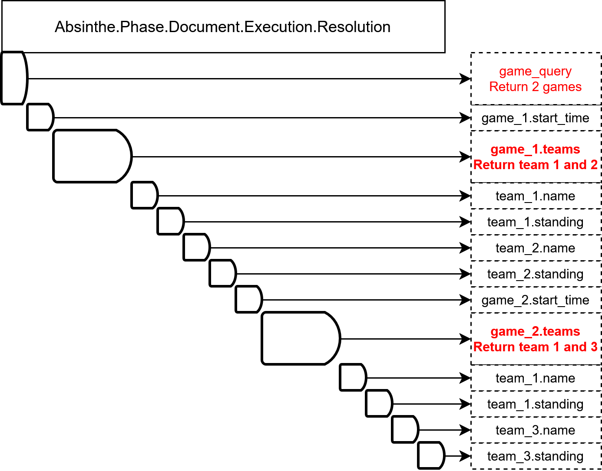

Dataloader is Blocking
In short, the learning for me is
Although Dataloader resolver requires async callback, it is blocking in execution.
Dataloader is bestly used in the scenarios where IOs are quick
When the query is CPU intensive, use
Asyncto signficantly reduce the latency.
Background
GraphQL Library in Elixir
Here’s a simple GraphQL schema definition
object :game do
field :teams, list_of(:team) do
resolve fn game, _args, _ctx ->
# Query the details of the teams
teams = io_request_teams(game.team_ids)
{:ok, teams}
end
end
field :start_time, :datetime
end
object :team do
field :name, :string
field :standing, :string
end
query do
field :games_query, list_of(:game) do
arg :date, non_null(:datetime)
resolve fn %{date: date}, _ ->
# Returns the games in this certain date
games = io_request_games(date)
{:ok, games}
end
end
end
Dataloader in Absinthe
Did you notice the problem in the example above?
It can do N+1 query.
So there’s the pattern called dataloader designed to solve this problem.
object :game do
field :teams, list_of(:team) do
resolve fn game, _args, %{loader: loader} = _ctx ->
# Query the details of the teams
## Instead of blocking IO:
## teams = io_request_teams(game.team_ids)
## {:ok, teams}
## Perform the load and read in an async callback fasion
loader
|> Dataloader.load(MyDataloader, :load_teams_by_game, game.id)
|> on_load(fn loader ->
teams = Dataloader.get(MyDataloader, :loader_name, :load_teams_by_game, game.id)
{:ok, teams}
)
end
end
In another place, we need to define the function to handle load_teams_by_game.
Here for simplicity, I am going to use the Dataloader.KV.
@spec load_teams_by_game(:load_teams_by_game, MapSet.t()) :: map()
def load_teams_by_game(:load_teams_by_game, mapset_games) do
# Here, the mapset_games are the deduplicated games passed in by `Dataloader.load()`
team_ids = mapset_games |> Enum.map(& &1.team_ids) |> List.flatten()
teams = io_bulk_fetch_teams(team_ids)
teams_by_game_id = Map.new(
mapset_games,
fn game -> {
game,
Enum.map(game.team_ids, & Map.get(teams, &1)) |> Enum.reject(&is_nil/1)
}
)
teams_by_game_id
end
Absinthe Resolution Model
Here are two graphs illustrating the order of the resolvers in Absinthe resolution model. The left one is without Dataloader, the right one is with Dataloader.
 |
|
|---|---|
Without Dataloader |
Dataloaded Teams |

In all cases, the resolvers are evaluated sequentially inside the request thread. So if the resolver includes IO operations, such as database, redis, or another service, those IO operations are blocking. For example, if there’s 10 fields inside an object, only 1 is IO blocking. If this blocking field is resolved first, then even though the rest 9 fields are ready to be resolved, the CPU must wait until the first field finishes.
In the Dataloader example, when the Game.teams field is encountered, the resolver returns immediately but this field is marked as suspended, and Absinthe continues to resolve other fields.
After all regular fields are finished, Absinthe allows Dataloader to run any pending queries, which includes this load_teams_by_game for team 1,2,3 of game 1,2.
Important: During the Dataloader’s IO operation, Absinthe Resolution thread waits on the Dataloader’s tasks. Dataloader is BLOCKING.
This makes sense because absinthe already resolved those regular fields, at this time, there’s no work available.
Absinthe Async Middleware
https://hexdocs.pm/absinthe/Absinthe.Middleware.Async.html
object :game do
field :teams, list_of(:team) do
resolve fn game, _args, _ctx ->
# Wrap the code inside an async task
task = Task.async(fn ->
teams = io_request_teams(game.team_ids)
{:ok, teams}
)
{:middleware, Elixir.Absinthe.Middleware.Async, task}
end
end
This is real nonblocking IO. Here’s the execution timing graph (compared to dataloader)
|
|
|---|---|
Async |
Dataloader |

This is real async because while the IO task for game1.teams is executing, the Absinthe resolution thread can resolve the rest of fields (game2.start_time and game2.teams) in parallel.
Discussion
I would like to do thought experiment in a few cases to see the comparison between async and dataloader.
Scenario 1: Single Layer Database
Suppose the GraphQL Object is this
games {
teams # read from database
scores # read from database
season # read from database
}
Dataloader (Suppose each db read is 5ms):
I didn’t mention previously, but all dataloader functions are executed in parallel when the
Absinthe Execution Thread is waiting for all of them.
So the SQL for teams, scores, and seasons will be executed in parallel.
So the total blocking time is 5ms. Having non-IO fields in games won’t change this result.
Async (Suppose each db read is 3ms):
The total blocking time is 3ms. In approximation, all of the db reads are issued at the same time,
and finish around the same time. The downside is that \(3 * games\) queries are issued.
If there are some other non-IO fields in games, then those execution time can overlap with the 3ms,
and even reduce the blocking time.
Scenario 2: Remote Service
Suppose the fields are served by a remote service which is more expensive to call
games {
teams # remote service
scores # remote service
}
Dataloader (Suppose the batched request takes \(3 * games + 20\) ms): Similar to Scenario 1, the total blocking time is \(3 * games + 20\) ms.
Async (Each request takes 23ms):
Similar to Scenario 1, the total blocking time is only 23ms and need to minus any additional non-IO fields in games.
Scenario 3: Blended Duration
games {
teams # 3 * games + 20ms
scores # constant 5ms
static_field_1 # only CPU is needed, 0.5ms
...
static_field_20 # only CPU is needed
}
Dataloader: The total blocking time is \(3 * games + 25\) ms.
Async: The total blocking time is \(23 + 5 - 10 = 18\) ms in the ideal case.
Conclusion
Dataloader has an almost constant blocking duration (regardless of the number of games),
however, this duration is almost always beaten by Async,
because of those CPU-only fields under the same parent.
The more CPU-only fields, the more parallelization Async achieves.
So when the query is CPU intensive, use Async to signficantly reduce the latency.
On the other hand, Dataloader solves N+1 query problem (just as its original purpose). However, because Dataloader is at its core BLOCKING, it is bestly used in the Database Scenario where IOs are so quick that having blocking IO isn’t a real issue.
One importantly learning for me is this:
Although Dataloader resolver requires async callback, it is blocking in execution.
Random Thoughts
Is it possible to combine the merits of Dataloader and Async?
This is a naive thought. Because batching needs the information about the entire set of ids, so IO can only happen when the resolvers for all those batching fields are executed. However, without running the resolver on CPU and look at the result, there’s no method to predetermine if this resolver needs a batched query.
What if Absinthe resolves the query with BFS instead of DFS?
Suppose the query is
games {
CPU_field_1
CPU_field_2
CPU_field_3
IO_field_1
IO_field_2
}
If we have 5 games object, currently Absinthe will resolve object by object in DFS.
With BFS, we can resolve the IO_field_1 of all object, kick start the Dataloader,
let it run in the background, and resolve the IO_field_2 of all object,
start another Dataloader task. And then resolve those CPU fields.
After that, wait until the IO is finished, then do the callbacks.
In addition to BFS execution, Absinthe also needs the programmer to manually mark which are the IO fields, so that they are resolved before the CPU fields to maximize parallelization.
Just a naive thought, any discussion is welcome to my email!!!